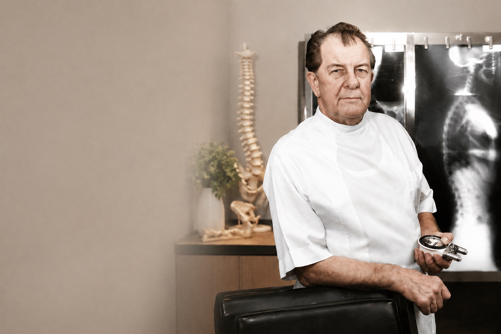
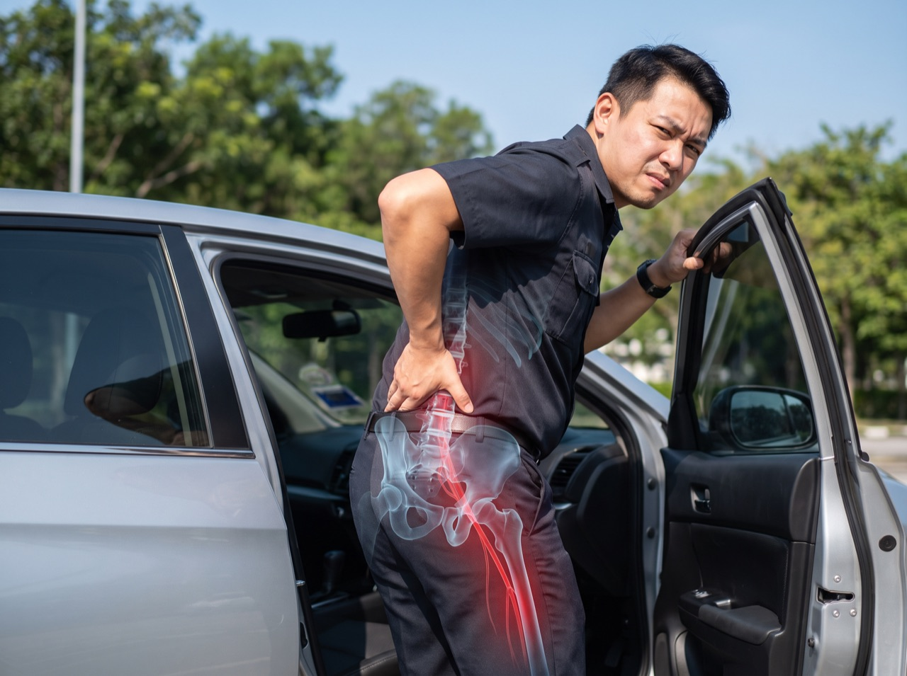
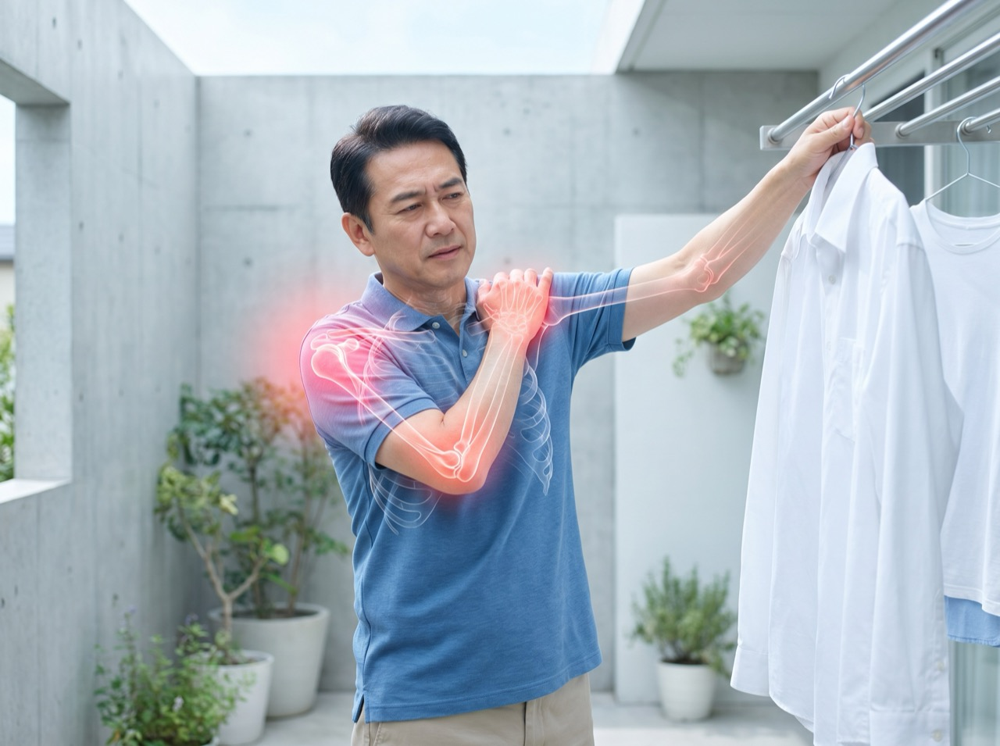
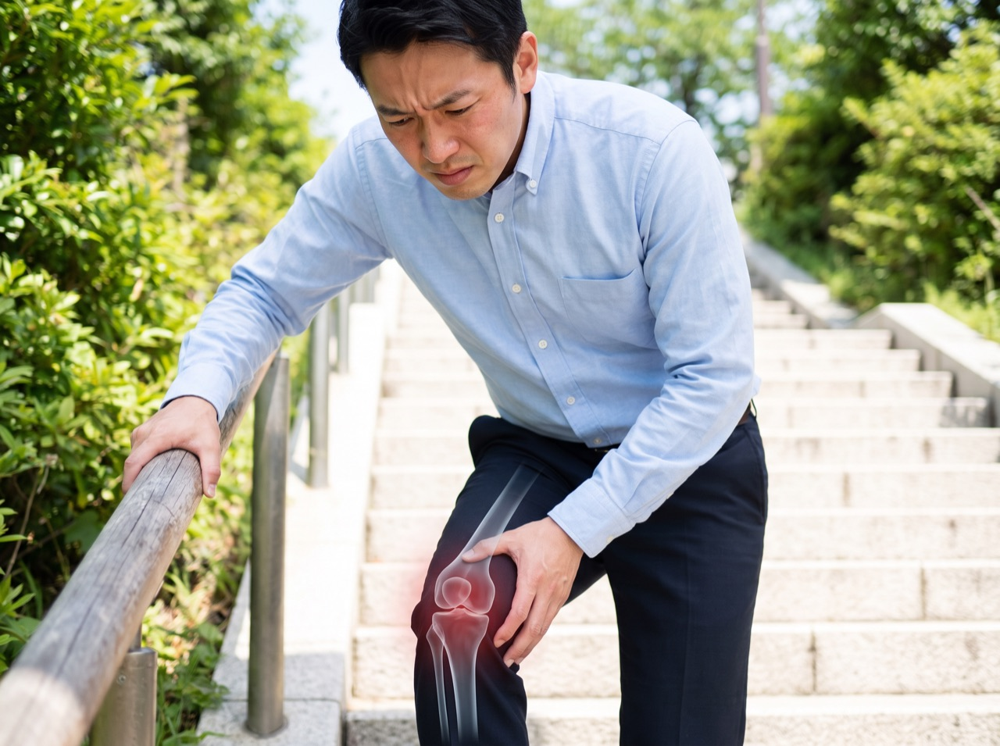
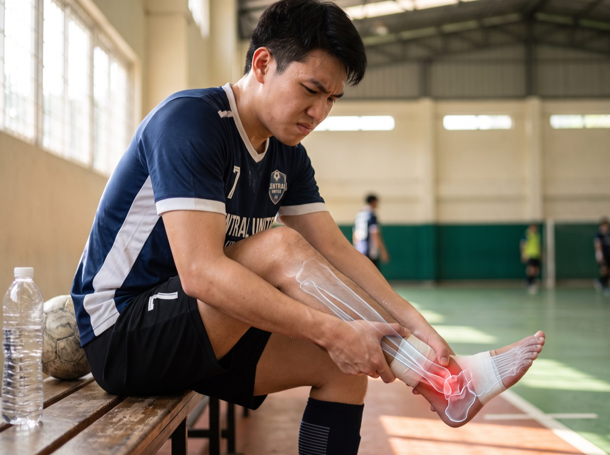
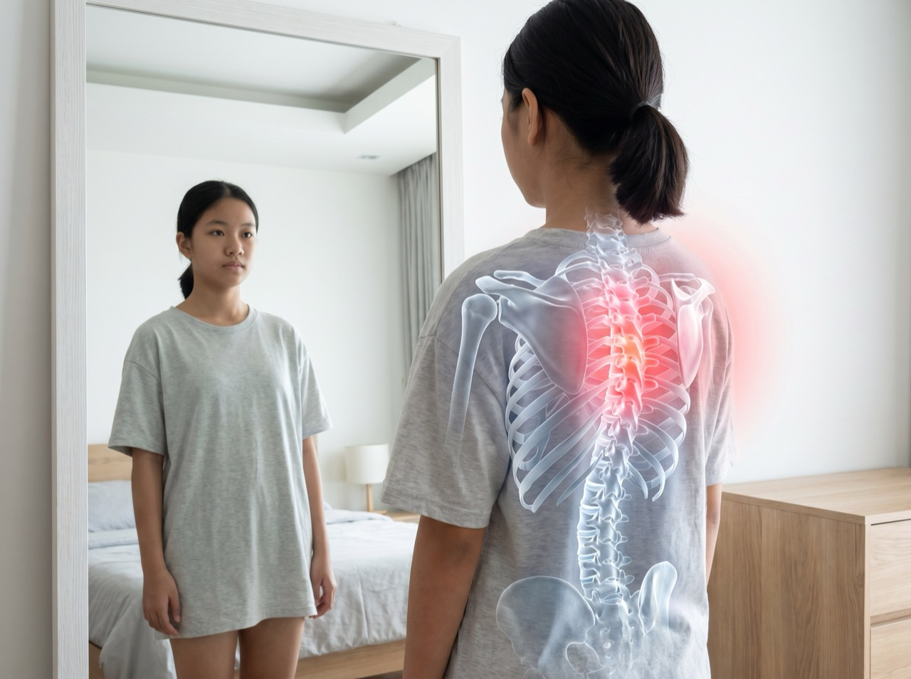

It all starts with the spine.
Every step, bend and turn runs through it — and so does your nervous system. A spine that moves well is the foundation of a body that works well.

Dr. Clarence S. Gonstead worked on engines before he ever worked on spines. He brought a mechanic's principle to the body — a structure is only as sound as its foundation — and spent fifty-five years turning it into a system that checks the spine five ways before touching it. His clinic in Mount Horeb, Wisconsin, a town of some 1,400 people, grew large enough to need its own airstrip and a hotel for the patients who travelled in to see him.
“Take your time, give them the utmost of your ability as a chiropractor, find the correct subluxation. Accept it. Correct it. Leave it alone.” Dr. Clarence S. Gonstead · 1898–1978
Every step, bend and turn runs through it — and so does your nervous system. A spine that moves well is the foundation of a body that works well.
Twenty-four vertebrae, each with its own job. We break the spine down section by section — because "back pain" is never the whole spine, it is a specific level.
When one segment loses its alignment and stops moving freely, the nerves around it are irritated and the body compensates. That is the restriction you feel as pain and stiffness.
By hand, only where the evidence points — and nowhere else. A precise correction that restores motion to the exact segment that lost it.
With the joint moving and the irritation settling, the body does what it was built to do — heal. Movement returns, and this time it holds.
Most back pain gets a guess. Yours gets a five-point diagnostic system — so when we adjust, we adjust the right segment, in the right direction, at the right time.
Reading posture, gait and symmetry for the subtle deviations that point to where trouble starts.
A dual-probe Nervoscope glides down the spine, reading small side-to-side differences in skin temperature that flag a level worth a closer look.
Feeling the spine at rest for swelling, tenderness and tight muscles around each segment.
Moving the spine through its ranges to find joints that are locked or not travelling freely.
Full-length, weight-bearing radiographs reveal exact alignment and disc integrity under real load.
Sixteen of the most common reasons people walk through our door. If yours is not on the list, message us — the assessment will tell us if chiropractic is right for you.
Bulging or herniated discs pressing on nearby nerves.

Lower or mid-back pain from posture, strain or misalignment.

Sharp, radiating pain down the leg from a compressed nerve.
Stiffness from tech-neck, tension or restricted joints.
Recurring head pain rooted in upper-neck tension.
Lingering neck strain after a sudden impact.

Restricted, aching shoulders from posture or overuse.
Inflamed tendons from repetitive gripping and strain.
Tingling and weakness from a compressed wrist nerve.
Stiffness that quietly limits how freely you walk.

Aching or unstable knees from alignment issues or injury.

Strains and overuse injuries keeping you out of training.

Sideways spinal curves we assess, monitor and manage.
Retraining rounded shoulders and forward head.
Gentle, adapted care for back and pelvic comfort.
Gentle assessments tailored to growing spines.
You will always know the cost before any treatment begins. Ranges below cover most cases — your exact plan is confirmed at your report.
Final pricing is always confirmed with you before treatment starts.
Most adjustments are painless — many patients describe relief, not pain. The Gonstead approach is specific and controlled: no twisting your whole body, no forcing. Some mild soreness afterwards (like after exercise) is normal for the first day or two.
It depends on how long the problem has been building and what the examination shows. After your first assessment you will get a clear recommendation — including how many visits, how often, and how we will measure progress. No open-ended plans.
We adapt the technique to the body in front of us — gentler, more specific setups for children, older spines and pregnancy. The five-point examination always comes first, so we know what should be adjusted and what should not. No treatment is risk-free. We will talk you through what applies to you before we begin. And we will tell you if you are better served elsewhere.
Only when your case needs one. Weight-bearing X-rays show alignment under real load, which guides precise care — but if you have recent films, bring them and we may not need new ones.
Chiropractic focuses on correcting spinal joint misalignment affecting the nervous system; physiotherapy focuses on rehabilitating muscles and movement. They complement each other — our care plans often include rehab-style strengthening once your spine holds its alignment.
Some Malaysian insurers and employee benefit plans cover chiropractic care. We will issue receipts and reports you can submit — check with your provider, and message us if they need any supporting documents.
Book your first assessment at Mid Valley — 60 to 90 minutes, transparent pricing, plain-language answers.